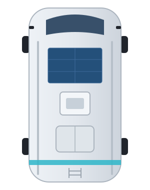
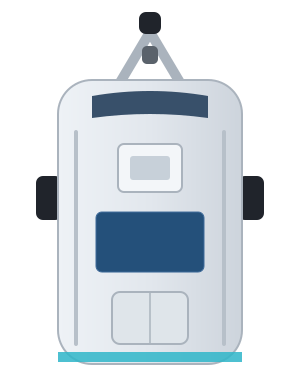
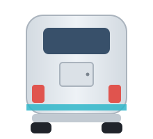

Ohne App, ohne Konto, ohne Koppeln. Alles, was über die erste Minute hinausgeht, ist eine Erweiterung, die du bei Bedarf dazunimmst.
Auf Level klebt dieser Aufkleber mit drei Codes. Du brauchst nichts zu tippen: Für den ersten Start scannst du Code 1 und dann Code 2. Code 3 kommt erst später dazu, wenn das Gerät in deinem WLAN ist.
Womit scannen: Mit der Kamera-App des Handys – die Kamera auf den Code halten, bis ein Hinweis erscheint, und den antippen. Auf Android geht auch Google Lens. Liest die Kamera nichts, ist in ihren Einstellungen das Scannen von QR-Codes vielleicht abgeschaltet.
Weil dieses WLAN kein Internet hat, reagiert jedes Handy etwas anders:
192.168.4.1 öffnet sich im Browser, Level ist bereit.Mehr ist für den Betrieb nicht nötig. Level braucht kein Internet, und du kannst die Seite jederzeit wieder so öffnen: im WLAN CamperMinder Code 2 scannen.
192.168.4.1 eingeben. Manche Browser machen daraus eine Suche; dann vollständig
http://192.168.4.1 eingeben.192.168.4.1.Ein Symbol wie eine App. Die Seite dafür im richtigen Browser öffnen, nicht im Fenster Anmelden des iPhone:
auf dem iPhone in Safari 192.168.4.1 aufrufen, dann Teilen → Zum Home-Bildschirm; auf Android in Chrome, dann
⋮ → Zum Startbildschirm hinzufügen. Code 2 öffnet die Seite bereits im richtigen Browser. Das Symbol öffnet sie im Vollbild –
wo andere Geräte eine App brauchen, hat Level die Bedienung selbst eingebaut. Neue Funktionen kommen später als Update
aufs Gerät; eine App musst du nie aktualisieren.
Anzeige → Fahrzeug: Fahrzeugart, Radstand und Spurweite. Aus den Maßen rechnet Level, wie viele Zentimeter jede Ecke hoch muss.
Die Maße bestimmen zweierlei: wie hoch jede Ecke angehoben werden muss – und ab wann „eben“ gilt. Grob falsche Maße verschieben also auch den Punkt, an dem das Gerät „steht eben, Stopp“ sagt.
Das Fahrzeug einmal wirklich waagerecht stellen, mit einer Wasserwaage längs und quer geprüft, und auf Anzeige unter den Ansichten Neigung kalibrieren tippen. Ab Werk ist der Sensor bereits kalibriert; dieser Schritt gleicht aus, wie das Gerät in deinem Fahrzeug sitzt.
Wie lange hält die Kalibrierung? Solange das Gerät nicht bewegt wird, unbegrenzt – sie übersteht Stromausfall und Software-Update. Ein Wohnmobil erlebt allerdings zwischen Winternacht und Sommermittag 40 bis 50 Grad Unterschied, und der Nullpunkt jedes Beschleunigungssensors wandert ein wenig mit der Temperatur. Scheint die Anzeige über die Jahreszeit zu wandern, einfach noch einmal kalibrieren.
Die Bedienseite zeigt dein Fahrzeug in drei Ansichten: von oben mit einer wandernden Blase, von der Seite und von hinten, dazu eine Anweisung in Klartext, welche Ecke wie viele Zentimeter angehoben werden muss. Die Grafik richtet sich nach der Fahrzeugart, die du eingestellt hast.



Die Toleranz ist nicht nur die Grenze zwischen „eben“ und „nicht eben“, sondern der Maßstab der Anzeige selbst: Toleranzgrenze = Rand der grünen Zone. Steht das Fahrzeug innerhalb der Toleranz, steht die Blase in der Mitte, die Anzeigen stehen mittig und die Seitenansichten waagerecht.
Deshalb sieht die Anzeige mit 5 cm Toleranz gröber aus als mit 1 cm. Sie zeigt dieselbe Messung, nur an dem Maßstab, den du vorgegeben hast: Wer 5 cm erlaubt, will bei 4 cm nicht sehen, dass 4 cm fehlen – er will sehen, dass er fertig ist.
Einmal „eben“ bleibt „eben“, bis die Neigung deutlich über die Toleranz hinausgeht. So springt die Anzeige an der Grenze nicht hin und her.
Das ist Geschmack: Der eine will, dass sie steht wie angenagelt, der andere will jede Regung sehen. Deshalb gibt es zwei Regler, auf der Bedienseite unter Anzeige. Sie wirken sofort, ohne Neustart – zum Ausprobieren im Fahrzeug.
| Was du beobachtest | Regler | Richtung |
|---|---|---|
| zappelt im Stand noch | Anzeigeruhe | höher |
| hinkt beim Auffahren hinterher | Anzeigeruhe | niedriger |
| folgt beim Rangieren zu ruckelig | Anzeigeruhe | höher |
| springt an der Toleranzgrenze hin und her | Haltebereich | höher |
Anzeigeruhe geht von 0 bis 10, Vorgabe 5. Sie ändert nichts an der Messung und nichts an der Toleranz – nur die Geduld.
| Ruhe | Reaktionszeit | Woran man es merkt |
|---|---|---|
| 0 | sofort | die Zahl lebt, jede Regung sofort |
| 2 | rund 1 s | leichtes Wandern der letzten Stelle |
| 5 | rund 6 s | steht im Stand still |
| 10 | rund 24 s | steht ebenso still, folgt aber träger |
Zum Ausprobieren nach unten drehen, nicht nach oben. Oberhalb von etwa 3 wird die Anzeige nicht mehr sichtbar ruhiger, sie reagiert nur noch später. Den Unterschied zwischen 5 und 10 siehst du nicht im Stillstand, sondern wenn du dich ans Fahrzeug lehnst.
Haltebereich in Prozent, Vorgabe 125: Wie weit die Neigung über die Toleranz hinausgehen darf, bevor „eben“ zurückgenommen wird. 100 % heißt sofort – dann springt die Anzeige an der Grenze hin und her.
Wem die Anzeige zu grob ist, schaltet den Präzisionsmodus ein: Dort steht die Blase auch innerhalb der Toleranz an ihrer echten Stelle, die Winkel stehen mit zwei Nachkommastellen da, und statt der Zentimeter gilt Toleranz genau in Grad – dieselbe Zahl für beide Achsen. Der Schalter sitzt auf der Bedienseite unter Fahrzeug.
| Leuchte | Bedeutung |
|---|---|
| grün, an | Strom ist da |
| rot, lang an, lang aus | Das WLAN von Level ist offen: Code 1, dann Code 2 – oder von Hand mit CamperMinder verbinden und 192.168.4.1 öffnen |
| rot, ein kurzes Blinken alle drei Sekunden | Das Gerät ist in deinem WLAN |
| rot, gleichmäßig im Halbsekundentakt | Der Sensor antwortet nicht. Bitte melden. |
| rot, hektisches Doppelblinken, dazu drei Töne | Wächteralarm: Das Fahrzeug hat seine Lage verändert |
| rot aus | Die Leuchte ist mit dem Schalter Status-LED abgeschaltet. Ein Alarm blinkt trotzdem. |
Die Bedienseite spricht Deutsch und Englisch. Ohne eigene Wahl richtet sie sich nach der Spracheinstellung des Handys; umstellen unter Reiter Technik → Sprache.
Die Wahl gilt je Handy, nicht je Gerät – zwei Leute in einem Fahrzeug lesen so jeder in seiner Sprache. Die Namen der Messwerte bleiben deutsch, damit Home Assistant und MQTT bei einem Sprachwechsel weiter zusammenpassen.
Nur nötig für automatische Updates und Home Assistant. Ohne diesen Schritt funktioniert alles andere unverändert, unterwegs sowieso.
Damit hast du zwei Symbole, und beide bleiben richtig. Ist das Gerät in deinem WLAN, gilt die neue Adresse. Ist dein WLAN nicht in Reichweite,
öffnet das Gerät nach etwa 20 Sekunden wieder sein eigenes Netz, und es gilt 192.168.4.1. Die Zugangsdaten bleiben gespeichert.
Code 3 auf dem Aufkleber öffnet das Gerät in deinem WLAN über seinen Namen, camperminder-level.local, ganz gleich, welche
Adresse dein Router ihm gibt. Dein Handy muss dafür in deinem WLAN sein, nicht im WLAN CamperMinder. Auf dem iPhone klappt das, auf Android
nicht auf jedem Gerät. Öffnet Code 3 dort nichts, nimm das Symbol, das du dir in Schritt 3 angelegt hast.
| Du bist … | Code |
|---|---|
| beim ersten Start, oder dein WLAN ist nicht in Reichweite: das Gerät hat sein eigenes Netz offen | 1, dann 2 |
| das Gerät ist in deinem WLAN | 3 |
Kommt das WLAN CamperMinder nach einer halben Minute wieder, hat die Anmeldung nicht geklappt, meist wegen eines Tippfehlers im Passwort. Die Seite sagt das dann auch. Einfach wieder verbinden, berichtigen, speichern.
camperminder-level.local im Browser eingeben. Auf dem iPhone klappt das fast immer, auf Android nicht auf jedem Gerät.Die Suche findet nichts in Gäste-WLANs, die ihre Geräte voneinander abschotten, und in ungewöhnlich eingerichteten Netzen. Dann bleibt der Blick in den Router.
Der Wächter meldet eine Lageänderung an alle, die das Gerät erreichen – im eigenen Netz. Wer am Strand steht, während das Fahrzeug aufgebockt wird, erfährt es damit erst bei der Rückkehr. Genau dafür gibt es den Fernalarm: Das Gerät schickt die Meldung selbst an einen Push-Dienst, den du betreibst oder benutzt.
Kein Konto bei uns, keine Daten bei uns, keine Verfügbarkeitszusage. Das ist der Preis dafür, dass es nichts kostet und niemand mitliest.
Reiter Technik → Abschnitt Fernalarm: Adresse eintragen, speichern, Testmeldung senden. Der letzte Schritt ist gehört unbedingt dazu – ein Alarmweg, den niemand ausprobiert hat, ist keiner.
Zwei Betriebsarten, unterschieden am Platzhalter {text}:
| Adresse | Was das Gerät tut | |
|---|---|---|
| A | ohne {text} | schickt die Meldung als Rumpf einer POST-Anfrage |
| B | mit {text} | setzt die Meldung kodiert in die Adresse ein und ruft sie ab |
| Dienst | Beispiel | Art | Kosten |
|---|---|---|---|
| Telegram | https://api.telegram.org/bot<TOKEN>/sendMessage?chat_id=<Nr>&text={text} | B | kostenlos |
| Home Assistant Webhook | https://dein-ha/api/webhook/xyz | A | kostenlos, wenn HA ohnehin läuft |
| Node-RED, n8n, eigener Dienst | Adresse des Ablaufs | A oder B | eigener Server |
| ntfy selbst betrieben | https://ntfy.mein-server/mein-thema | A | kostenlos, braucht einen Server |
| ntfy.sh (gehostet) | https://ntfy.sh/mein-thema | A | Grenzen im Gratisteil, Tarife darüber |
| IFTTT Webhooks | https://maker.ifttt.com/trigger/<Ereignis>/with/key/<Schlüssel>?value1={text} | B | Gratisteil begrenzt |
Empfehlung für den Standardfall: Telegram. Kein Server, kein Abo, kein weiterer Dienst, den man kennenlernen muss – ein Bot bei @BotFather, und die Meldung landet in einem Chat. Wer Home Assistant betreibt, nimmt besser den Webhook: Dann entscheidet die Automatisierung, wohin die Meldung geht, und kann auch Dienste bedienen, die das Gerät selbst nicht ansprechen kann.
Pushover und Ähnliches gehen nicht direkt. Sie verlangen eine POST-Anfrage mit mehreren Formularfeldern; dafür passt keine der beiden Betriebsarten. Der Weg dorthin führt über einen Webhook in Home Assistant oder Node-RED – der nimmt die Meldung entgegen und schickt sie weiter.
1. Bot anlegen. In Telegram @BotFather anschreiben, /newbot, Anzeigename eingeben (etwa CamperMinder), dann einen
eindeutigen Benutzernamen, der auf bot endet. BotFather antwortet mit dem Token:
8123456789:AAHxyz-abcDEF_ghiJKL1234567890mnop
2. Den Chat starten. Den eigenen Bot öffnen und Start drücken. Ein Bot darf niemandem schreiben, der ihn nicht zuerst angeschrieben hat – ohne diesen Schritt schlägt alles Weitere fehl.
3. Chat-Nummer holen. Im Browser aufrufen:
https://api.telegram.org/bot<TOKEN>/getUpdates
In der Antwort steht "chat":{"id":123456789,...} – diese Zahl ist die Chat-Nummer. Kommt {"ok":true,"result":[]}, fehlt Schritt 2.
4. Im Browser gegenprüfen, bevor etwas ins Gerät getippt wird:
https://api.telegram.org/bot<TOKEN>/sendMessage?chat_id=<NUMMER>&text=Test
{"ok":true,…} und die Nachricht auf dem Handy heißt: passt. Bei 403 fehlt Schritt 2, bei 401 stimmt der Token nicht.
5. Ins Gerät eintragen – dieselbe Adresse, statt Test der Platzhalter:
https://api.telegram.org/bot<TOKEN>/sendMessage?chat_id=<NUMMER>&text={text}
Technik → Fernalarm, eintragen, speichern, Testmeldung senden. Die Adresse braucht rund 120 Zeichen, das Feld fasst 191.
Wer Telegram bereits mit Home Assistant oder einem anderen System benutzt, braucht keinen neuen Bot – und muss nichts umstellen:
Das Gerät schickt nur, es liest nie. Es ruft ausschließlich sendMessage auf. Mehrere Absender auf demselben Bot stören sich nicht.
Ein bestehender Webhook oder ein laufendes Abrufen durch Home Assistant bleibt unberührt.
telegram_bot: api_key). Sonst in Telegram bei
@BotFather → /mybots → Bot auswählen → API Token.allowed_chat_ids).getUpdates in diesem Fall nicht aufrufen. Telegram lässt nur einen Abrufer gleichzeitig zu: Ist für den Bot ein Webhook gesetzt,
antwortet getUpdates mit 409 Conflict; ruft ein anderes System gerade ab, reißt man ihm die Meldung weg. Die Chat-Nummer kommt deshalb aus der
vorhandenen Konfiguration – oder aus einem zweiten, eigenen Bot.
Ein eigener Bot lohnt sich trotzdem, wenn die Alarmmeldung anders klingen oder in einem anderen Chat landen soll als der übrige Hausbetrieb. Beides geht, es ist eine Frage des Geschmacks und nicht der Technik.
Wer den Token hat, kann als dieser Bot schreiben. Er steht im Gerät und ist auf der Geräteseite lesbar – bei offenem eigenem Netz also für jeden in Funkreichweite. Wer den Fernalarm benutzt, vergibt unter Technik → Eigenes Netz ein Passwort. Und er gehört auf kein Bildschirmfoto.
Updates bringen neue Funktionen und Verbesserungen auf Level. Installiert wird immer erst, wenn du es bestätigst.
| Lage | Weg |
|---|---|
| Gerät hat Internet | Reiter Technik → Auf Updates prüfen |
| Gerät im eigenen Netz | Reiter Technik → Update-Datei vom Handy aufspielen |
Die laufende Fassung steht im selben Reiter.
Auf Updates prüfen fragt bei GitHub nach und sagt dir, was es gefunden hat:
Aufgespielt wird nur eine höhere Fassung, nie eine ältere.
Drücken musst du dafür nicht. Hat das Gerät Internet, sieht es nach jedem Einschalten und danach alle 12 Stunden selbst nach. Gibt es eine neue Fassung, steht oben auf der Seite, auf jedem Reiter, ein blauer Hinweis „Neue Fassung … verfügbar. Zum Installieren hier tippen.“ Installiert wird erst, wenn du tippst und bestätigst – nie von allein, also auch nicht während der Fahrt.
level-firmware.ota.bin aufs Handy laden. Nicht die factory.bin: Die ist für ein leeres
Board, als Update weist das Gerät sie ab.Sobald das Gerät in deinem WLAN ist, findet Home Assistant es über ESPHome von selbst. Die Integration CamperMinder kommt über HACS und bringt die Bedienkarte mit; Updates für die Software im Gerät meldet Home Assistant dann automatisch.
Drei fertige Automatisierungen bringen die Meldungen des Geräts dorthin, wo du sie liest. In Home Assistant: Einstellungen → Automatisierungen & Szenen → Blueprints → Blueprint importieren, dann die Adresse einfügen:
https://github.com/rcdev67/camperminder/blob/main/blueprints/automation/camperminder/kuehlschrank_warnung.yamlhttps://github.com/rcdev67/camperminder/blob/main/blueprints/automation/camperminder/waechter_alarm.yamlhttps://github.com/rcdev67/camperminder/blob/main/blueprints/automation/camperminder/frostwarnung.yamlDanach Automatisierung erstellen → Aus einem Blueprint, das Gerät auswählen und unter „Was soll passieren?“ eintragen, wie du benachrichtigt werden willst.
Beide Betriebsarten laufen mit derselben Software im Gerät. Wer klein anfängt, kann jederzeit umsteigen – ohne neue Software, ohne neues Gerät.
Das Gerät meldet Neigung, Hubhöhe je Ecke und die Anweisung im Klartext an einen MQTT-Broker. Damit lässt es sich in Systeme einbinden, die selbst keinen Neigungssensor haben – etwa ioBroker, openHAB oder Node-RED.
Für Home Assistant nicht nötig. Dort läuft alles über die eingebaute Verbindung zum Gerät. MQTT ist der Weg zu allem anderen. Wer MQTT nicht benutzt, merkt nichts davon: Ohne eingetragene Adresse baut das Gerät keine Verbindung auf.
Auf der Bedienseite unter Technik → MQTT: Adresse des Brokers, Port, Benutzer und Passwort eintragen und speichern. Danach startet das Gerät neu. Der Zustand steht anschließend im Feld MQTT. Adresse leeren und speichern schaltet MQTT wieder ab.
| Anzeige | Bedeutung |
|---|---|
aus | keine Adresse eingetragen – MQTT ist abgeschaltet |
verbunden mit … | läuft |
keine Verbindung zu … | Adresse erreichbar? Port? Benutzer und Passwort? Das Gerät muss dafür im selben WLAN sein wie der Broker. |
camperminder/level/<art>/<name>/state
Ob das Gerät erreichbar ist, meldet es unter camperminder/level/status mit online bzw. offline. Wer Werte weiterverarbeitet, sollte darauf hören –
sonst rechnet er nach einem Stromausfall mit dem letzten bekannten Stand weiter. Vorzeichen wie überall im Gerät: längs plus = Front höher, quer plus = rechte Seite höher.
Thema (nach camperminder/level/) | Inhalt |
|---|---|
sensor/neigung_pitch | Längsneigung in Grad, + = Front höher |
sensor/neigung_roll | Querneigung in Grad, + = rechts höher |
sensor/hub_vorne_links, …_vorne_rechts, …_hinten_links, …_hinten_rechts | Hubhöhe je Ecke in cm |
sensor/stuetzrad | Wohnwagen: + hoch, − runter |
sensor/abweichung_… (je Ecke, und abweichung_stuetzrad) | Abweichung in cm bis ganz waagerecht, auch innerhalb der Toleranz |
text_sensor/anweisung | z. B. Hinten links 4,5 cm hoch – Keilstufe 1 – derselbe Satz wie auf der Bedienseite |
Beim Wohnwagen bedeuten „hinten links/rechts“ die beiden Räder der einen Achse; „vorne“ bleibt auf 0, dort steht das Stützrad. Die Hubhöhen sind fertig gerechnet – Fahrzeugmaße, Fahrzeugart und Toleranz sind darin schon berücksichtigt. Das anbindende System muss nichts nachrechnen. Hub oder Abweichung? Der Hub sagt, was zu tun ist: Steht eine Achse innerhalb der Toleranz, fällt er auf 0. Die Abweichung zeigt dagegen immer, wie weit die Ecke noch von ganz waagerecht entfernt ist.
Thema (nach camperminder/level/) | Inhalt |
|---|---|
binary_sensor/camper_steht_gerade | ON = beide Achsen eben |
binary_sensor/pitch_eben, …/roll_eben | ON = Längs- bzw. Querachse eben |
binary_sensor/schraeglage | ON = über dem Grenzwert, Vorgabe 3° (Absorberkühlschrank) |
binary_sensor/lageaenderung | ON = Fahrzeug hat seine Ruhelage verlassen |
binary_sensor/in_bewegung | ON = Erschütterung, also Anwesenheit |
text_sensor/eigenes_netz | offen oder mit Passwort |
text_sensor/firmware_version | z. B. 4.2.4 |
text_sensor/update_stand | Ergebnis der Update-Prüfung: prüft, aktuell, Update verfügbar, kein Internet … |
text_sensor/name_im_netz | Name in der Geräteliste des Routers, z. B. camperminder-level |
in_bewegung ist kein Alarm. Es meldet, dass jemand einsteigt, der Wind drückt oder der Nachbar rangiert. Der Alarm ist lageaenderung – das Fahrzeug hat seine Lage verlassen.
Thema (nach camperminder/level/) | Inhalt |
|---|---|
binary_sensor/kalibrierung_pruefen | ON = Temperatur oder Sensorwerte weit weg von der Kalibrierung – neu kalibrieren |
text_sensor/kalibrierung | z. B. am 22.08.2026 bei 21 °C; ab Werk kalibriert, solange im Fahrzeug nicht kalibriert wurde |
binary_sensor/montage_pruefen | ON = der Sensor liefert Unsinn, Gehäuse lose? |
binary_sensor/frostgefahr | ON = Temperatur unter dem Grenzwert (einstellbar, Vorgabe 3 °C) |
sensor/innentemperatur | in °C. Kein Thermometer: Der Chip erwärmt sich selbst. Für eine Frostwarnung reicht es, für eine Klimaregelung nicht. |
Eine einfache Wasserwaage kennt ein Ziel: null. Level kennt drei Profile und richtet danach aus: Ausrichten, Schlafen (Kopfende etwas höher) und Ablassen (Boiler oder Tank laufen zu einem Punkt hin ab). Das Profil wirkt nur auf das Ausrichten; Schräglagenwarnung und Wächter rechnen weiter mit der echten Neigung.
Thema (nach camperminder/level/) | Inhalt |
|---|---|
select/zielprofil | Ausrichten, Schlafen, Ablassen |
select/schlafrichtung | Kopf vorn, Kopf hinten, Kopf links, Kopf rechts (in Fahrtrichtung gesehen) |
number/kopfende_anheben | 0 … 15 cm, Vorgabe 2 |
select/ablasspunkt | der tiefste Punkt: vorn, hinten, links, rechts oder eine der vier Ecken |
number/neigung_zum_ablasspunkt | 0 … 15 cm, Vorgabe 5 |
sensor/ziel_laengs, sensor/ziel_quer | die geltende Zielneigung in cm – der bequeme Weg für ein anbindendes System |
schraeglage meldet den Winkel. Was einen Absorberkühlschrank beschädigt, ist aber der Winkel mal der Zeit – kurz schief beim Rangieren ist folgenlos.
Wer eine Benachrichtigung schalten will, nimmt deshalb kuehlschrank_warnung.
Thema (nach camperminder/level/) | Inhalt |
|---|---|
binary_sensor/kuehlschrank_warnung | ON = lange genug schief, dass der Kühlschrank leidet |
sensor/schraeglage_dauer | Minuten über dem Grenzwert, 0 wenn gerade nicht |
text_sensor/kuehlschrank | arbeitet normal oder z. B. 3,4° schief seit 42 min – die Kühlleistung fällt ab |
number/kuehlschrank_kritisch_nach | 5 – 240 Minuten |
Drei Stufen aus einem einzigen Regler: Hinweis ab dem Überschreiten des Winkels, Warnung nach einem Drittel der eingestellten Zeit, dringend nach der vollen Zeit.
lageaenderung geht wieder aus, sobald das Fahrzeug in seine Lage zurückkommt. Als Alarm taugt das nicht – wer schläft, verpasst es. Der Wächter macht daraus einen Zustand, der
einrastet und stehen bleibt, bis er quittiert wird. Der Alarm übersteht einen Stromausfall.
Thema (nach camperminder/level/) | Inhalt |
|---|---|
binary_sensor/waechter_alarm | ON = hat ausgelöst und ist nicht quittiert |
text_sensor/waechter | aus, scharf in 45 s, scharf seit 2 h 10 min, ALARM – Lage verändert am 22.08. um 03:14 |
text_sensor/letzte_bewegung | gerade jetzt, 22.08. um 21:40, vor 3 h 12 min |
switch/waechter | ON / OFF – scharf schalten |
number/waechter_karenzzeit | 0 – 600 s |
button/alarm_quittieren/command | PRESS – löscht den Alarm, ohne den Wächter abzuschalten, und nimmt die jetzige Lage als neuen Bezugspunkt |
Fehlte beim Auslösen eine gültige Uhr – auf einem Stellplatz ohne Internet der Normalfall –, nennt der Text eine Zeitspanne statt einer Uhrzeit.
Diese Themen nehmen auch Befehle entgegen (…/command):
Thema (nach camperminder/level/) | Werte |
|---|---|
number/schraeglage_grenzwert | 1 – 10 Grad |
number/lageaenderung_grenzwert | 0,2 – 5 Grad |
number/waechter_karenzzeit | 0 – 600 Sekunden |
switch/praezisionsmodus, switch/waechter | ON / OFF |
switch/status_led | ON / OFF – die Leuchte am Gerät |
switch/alarmton | ON / OFF – der Summer beim Alarm |
switch/auffahrton | ON / OFF – die akustische Auffahrhilfe. Kommt nach einem Neustart immer aus zurück und schaltet sich beim Erreichen des Ziels selbst ab. |
button/neigung_kalibrieren/command | PRESS – jetzige Lage als eben übernehmen |
button/kalibrierung_zuruecksetzen/command | PRESS – Kalibrierung im Fahrzeug löschen; es gilt wieder die Werkskalibrierung |
Der Auffahrton taktet umso schneller, je kleiner der größte Hub einer Ecke ist – 1000 ms ab zehn Zentimetern, 120 ms am Ziel, dann ein langer Ton. Er folgt dem Zielprofil. Ein eingerasteter Alarm blinkt auch bei ausgeschalteter Status-LED – der Schalter nimmt die Betriebsanzeige weg, nicht die Meldung.
Zum Ausrichten genügen anweisung und die vier hub_* – der Rest ist Zugabe.
| Was | Was hilft |
|---|---|
| Kein WLAN CamperMinder in der Liste | Leuchtet die grüne Leuchte? Sonst fehlt Strom. Blinkt die rote kurz alle drei Sekunden, ist das Gerät in deinem WLAN, und das eigene Netz ist deshalb aus: siehe Ins eigene WLAN. Nach dem Einschalten bis zu 20 Sekunden warten. |
| Die Kamera reagiert nicht auf die Codes | In den Einstellungen der Kamera das Scannen von QR-Codes einschalten, oder Google Lens nehmen. Sonst die Wege unter Ohne Aufkleber. |
| Code 1 wird gelesen, aber das Handy tritt dem Netz nicht bei | Hat das eigene Netz ein Passwort bekommen (Technik → Eigenes Netz), passt Code 1 nicht mehr: Netz von Hand wählen und dein Passwort eingeben. |
| Nach Code 1 öffnet sich nichts | Auf Android normal: Code 2 scannen. Auf Samsung geht auch WLAN → Zahnrad bei CamperMinder → Router verwalten. |
| Code 2 öffnet nichts oder „Seite nicht erreichbar“ | Das Handy ist nicht (mehr) im WLAN CamperMinder. Erst Code 1, dann noch einmal Code 2. |
| Code 3 öffnet nichts | Code 3 gilt nur, wenn das Gerät in deinem WLAN ist und das Handy auch. Auf manchen Android-Handys geht .local gar nicht: dann das Symbol aus Ins eigene WLAN, Schritt 3, oder die Adresse aus dem Router. |
| Das Handy springt aus dem WLAN CamperMinder zurück | Es sucht Internet und nimmt lieber dein WLAN. Verbunden bleiben bestätigen; hilft das nicht, bei deinem WLAN Automatisch verbinden kurz ausschalten oder die mobilen Daten. |
192.168.4.1 lädt nicht | Vollständig eingeben: http://192.168.4.1. Manche Browser machen sonst eine Suche daraus. Das Handy muss im WLAN CamperMinder sein. |
| Längs und quer sind vertauscht | Das Gehäuse ist verdreht eingebaut. Der Pfeil muss nach vorn zeigen. |
| Die Blase springt bei der kleinsten Bewegung von Rand zu Rand | Kopfüber eingebaut, aber die Einbaulage steht auf Deckel oben. Auf Deckel unten stellen und neu kalibrieren. |
| Nach dem Eintragen des WLANs nicht mehr erreichbar | Wenn die Seite das Gerät nicht findet, Abschnitt 7. |
| Alles auf Anfang | Technik → Zurücksetzen. Löscht WLAN, Kalibrierung im Fahrzeug und Fahrzeugmaße; die Werkskalibrierung bleibt. Auch ein vergessenes Passwort für das eigene Netz ist damit weg – ausgesperrt ist niemand. |